Мачта и каретка
Правка и восстановление мачты, ролики и цепи, каретка, вилы, боковой сдвиг. Проверяем на грузе перед выдачей.
Фронтальные и вилочные — самое большое направление на нашей площадке. Сейчас в наличии 14 машин: Амкодор, Komatsu, Balkancar, TCM, Mitsubishi, TFN, VMG, Львовский. Ремонтируем любые, включая складскую технику от 1,5 до 5 тонн.
Позвонить +7 (910) 743-09-75Правка и восстановление мачты, ролики и цепи, каретка, вилы, боковой сдвиг. Проверяем на грузе перед выдачей.
Цилиндры подъёма и наклона: гильзовка, хром штоков, уплотнения. Насосы, распределители, новые РВД.
Дизель, бензин и газ: расточка, гильзовка, головки, топливная аппаратура. После сборки — обкатка.
Гидротрансформатор и коробка, ведущий мост и полуоси, бортовые редукторы, тормоза.
Для фронтальных: наплавка режущей кромки, ремонт стрелы, расточка проушин, замена пальцев и втулок.
Стёкла и уплотнители, отопитель, сиденье, приборы, жгуты, генератор и стартер, рабочий свет.
Фотографии с нашей площадки. Слева — как машина приехала, справа — как уехала.


Пришёл под полную переборку. Разобрали до рамы, восстановили геометрию, перебрали двигатель, КПП и гидравлику, поставили новый отвал и покрасили. Вышел на смену своим ходом.


Стоял в цеху с убитой гидравликой и проеденным кузовом. Перебрали двигатель и мачту, заменили цилиндры и шланги, вылечили металл, покрасили заново.
Машины после капремонта, с документами. Нажмите на фото — посмотрите со всех сторон.
 После капремонта
5 фото
После капремонта
5 фото
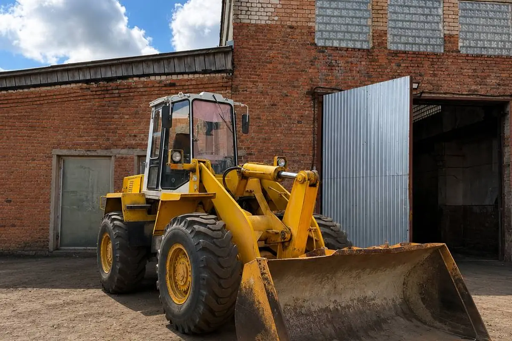
В наличии видео · 2 фото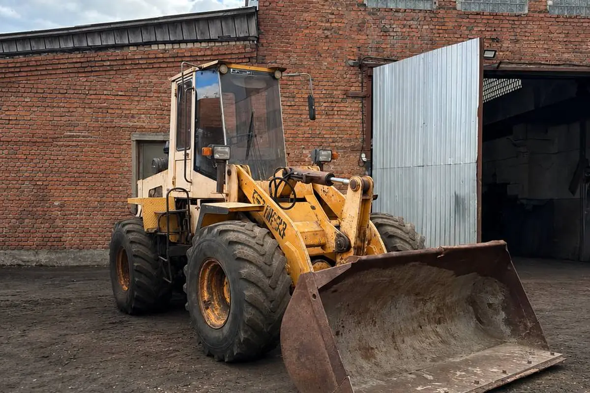
В наличии видео · 3 фотоСкладская техника грузоподъёмностью от 1,5 до 5 тонн.
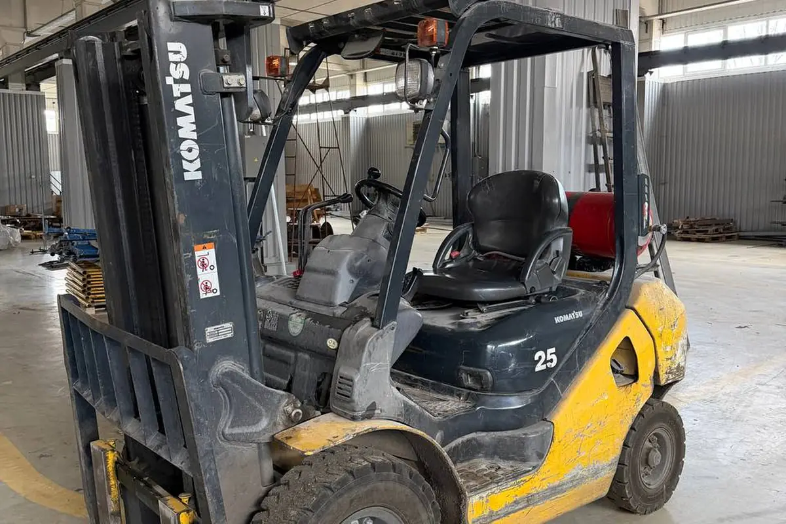
В наличии 5 фото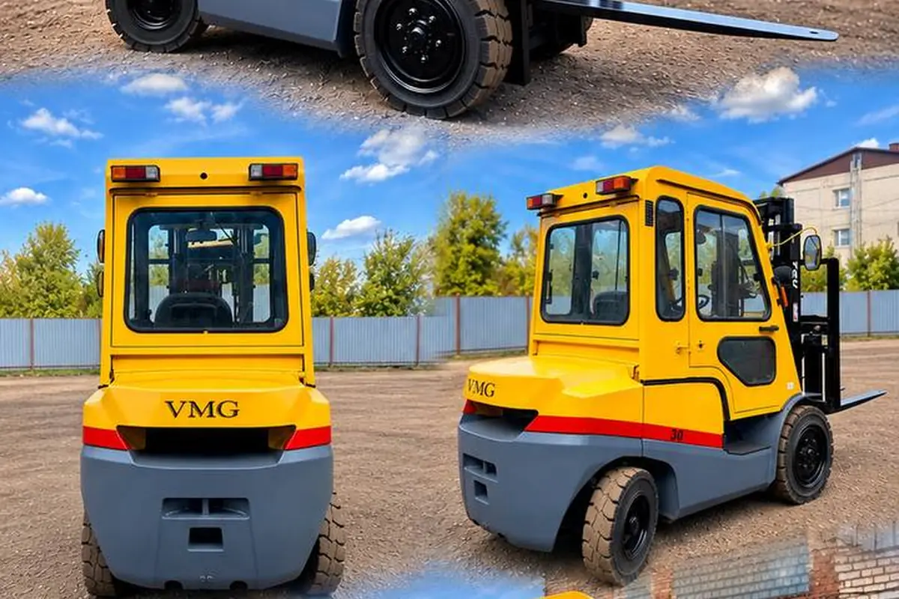
После капремонта видео · 5 фото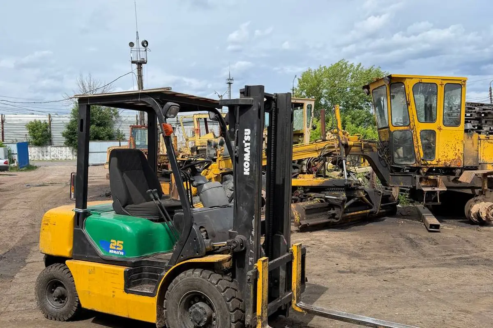
В наличии видео · 5 фото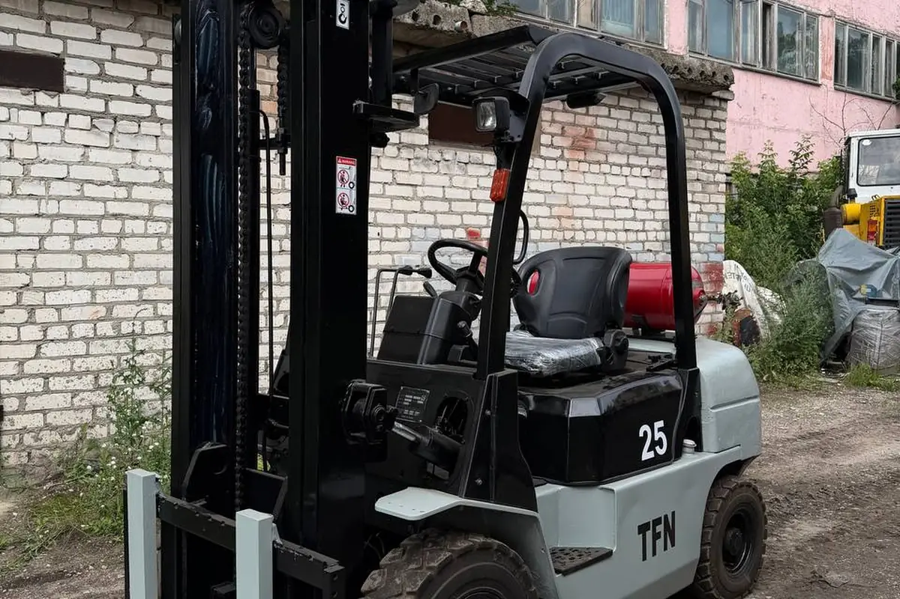
После капремонта видео · 4 фото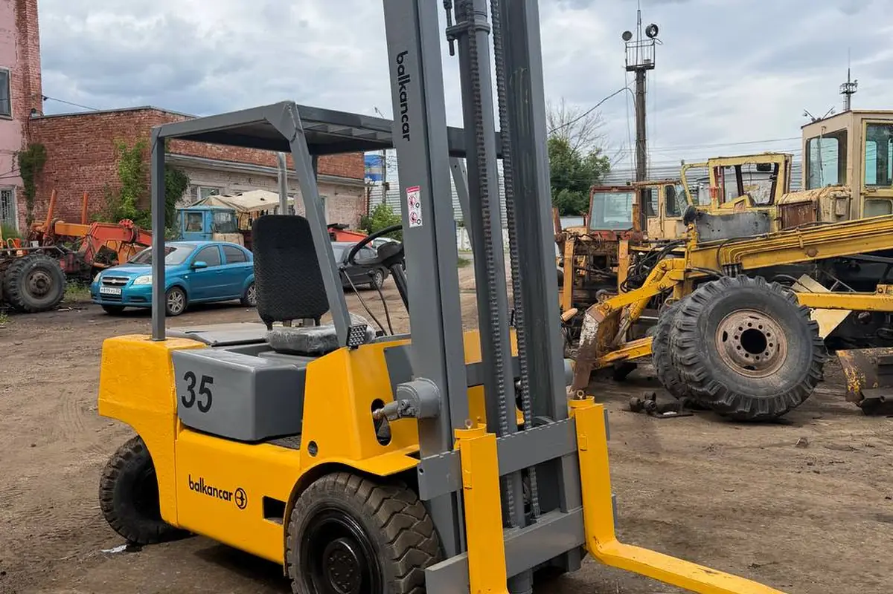
После капремонта видео · 4 фото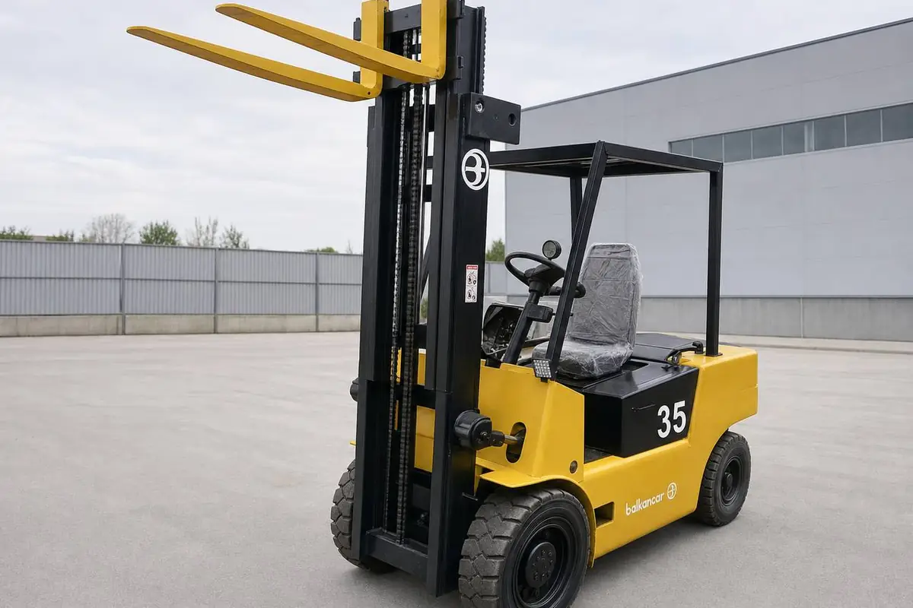
После капремонта 5 фото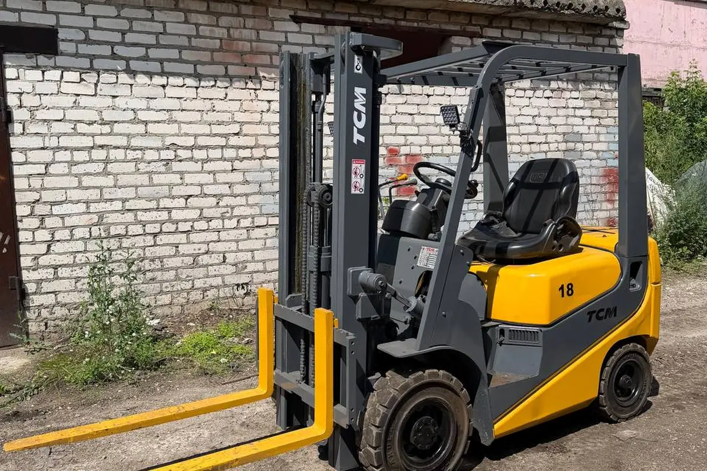
После капремонта видео · 5 фото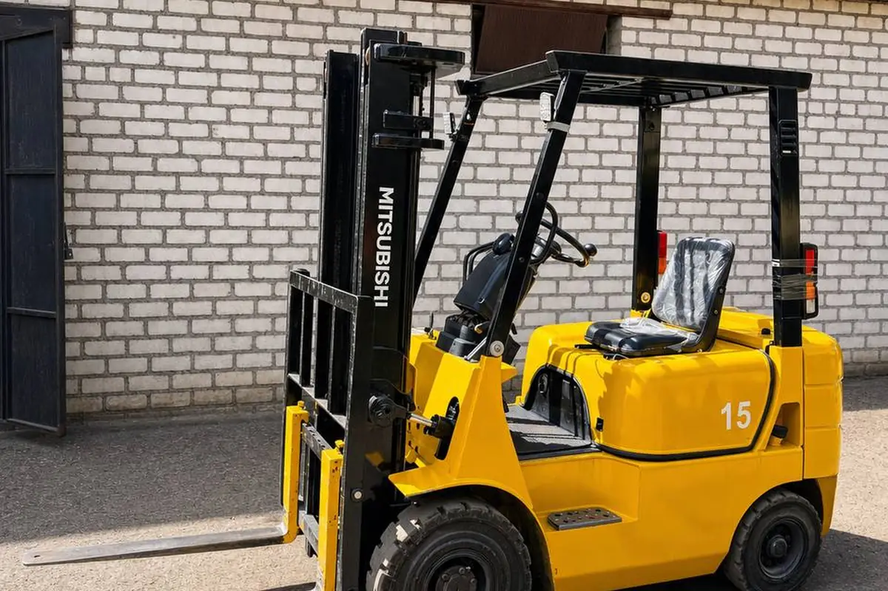
В наличии 5 фото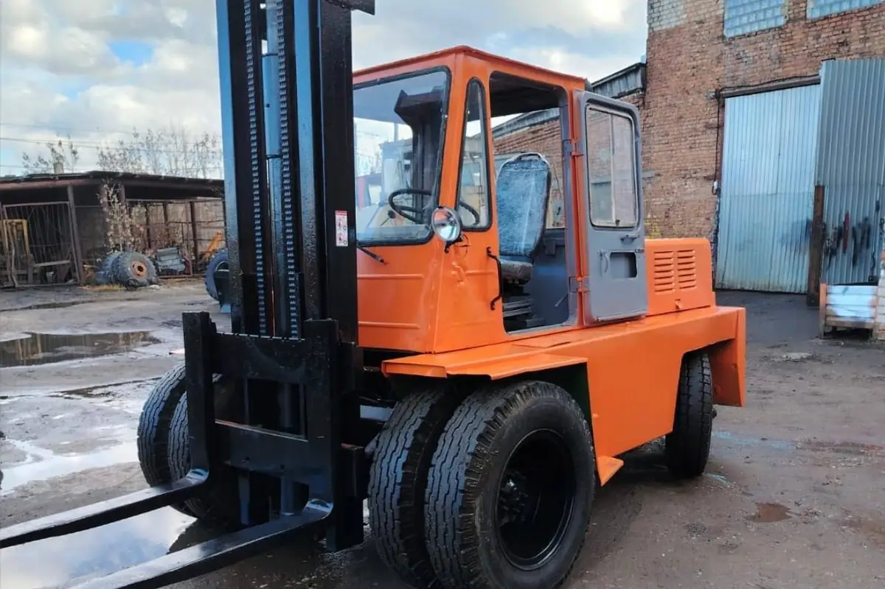
После капремонта 4 фото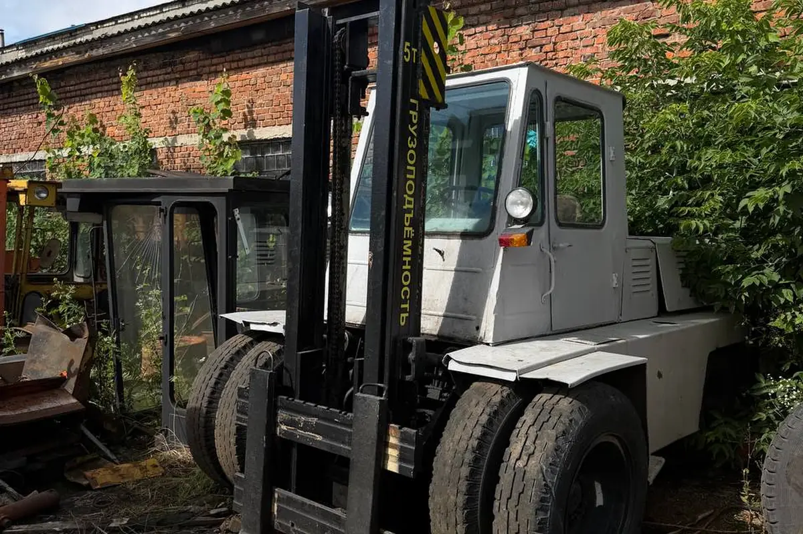
В наличии видео · 2 фото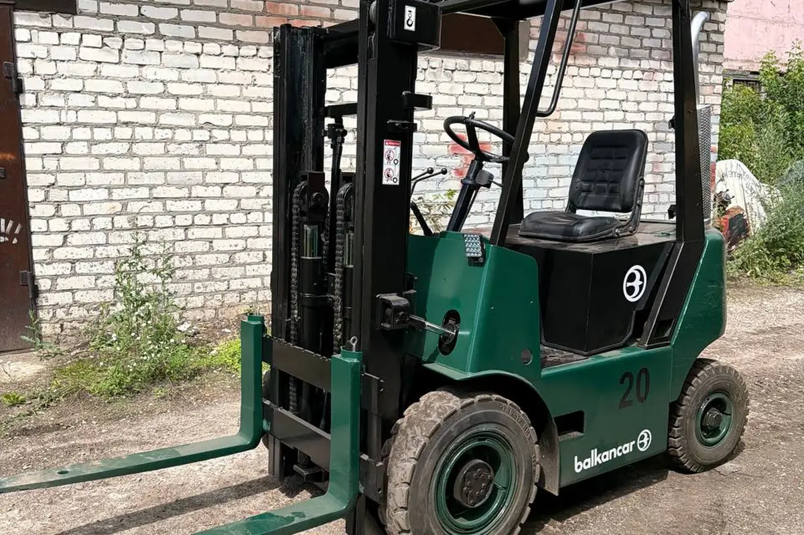
После капремонта видео · 4 фотоБез колл-центра и анкет. Скажите модель и что с машиной — сразу ответим, что можно сделать, сколько это займёт и во сколько обойдётся.
г. Брянск, ул. Уральская, 109. Приезжайте смотреть технику — место для трала есть, заезд свободный. Открыть на Яндекс.Картах →